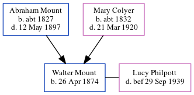

Walter Charles Mount 1874 -
[ Home ] | [ Calendar ] | [ Surnames Index ] | [ Errors ] | [ Family History ]The child of Abraham Mount (a mariner) and Mary Colyer (a charwoman), Walter Mount, the great-great-uncle of Nigel Horne, was born in Herne, Kent, England on 26 Apr 18741,2,3 and baptised in Herne Bay, Kent, England on 7 Jun 1874. He was married to Lucy Jane Philpott.
During his life, he was living in Eddington, Kent, England on 3 Apr 18814; in Vessels, Lincolnshire, England in 18912; and in Whitstable, Kent, England on 29 Sept 1939.
Parents
- Abraham was born c. 1827
- Mary Ann was born c. 1832
Citations
- 1881 England Census Online publication - Provo, UT, USA: The Generations Network, Inc., 2004. 1881 British Isles Census Index provided by The Church of Jesus Christ of Latter-day Saints © Copyright 1999 Intellectual Reserve, Inc. All rights reserved. All use is subject to the
- 1891 England Census Online publication - Provo, UT, USA: The Generations Network, Inc., 2005.Original data - Census Returns of England and Wales, 1891. Kew, Surrey, England: The National Archives of the UK (TNA): Public Record Office (PRO), 1891. Data imaged from The National
- Web: UK, Royal Naval Reserve Service Records Index, 1860-1955 Ancestry.com Operations, Inc.
- 1881 England, Wales & Scotland Census - Findmypast (was age 7 and the son of the head of the household)
Media
Canterbury Baptisms Transcription - GBPRS-CANT-B-96677548
Canterbury Marriage Banns Transcription - GBPRS-CANT-M-94100273-1
Kent, Canterbury Archdeaconry banns 1754-1928 - GBPRS/CANT/M/94100294/1
England, Births & Baptisms 1538-1975 Transcription - R_884300824
Family Tree
Map
Generated by ged2site. Last updated on Jul 3, 2024
Known Issues
Residence record for 29 Sep 1939 contains no citation
May have been living with mother on 3 Apr 1881, but the addresses don't match or aren't detailed enough to be sure
May have been living with father on 3 Apr 1881, but the addresses don't match or aren't detailed enough to be sure